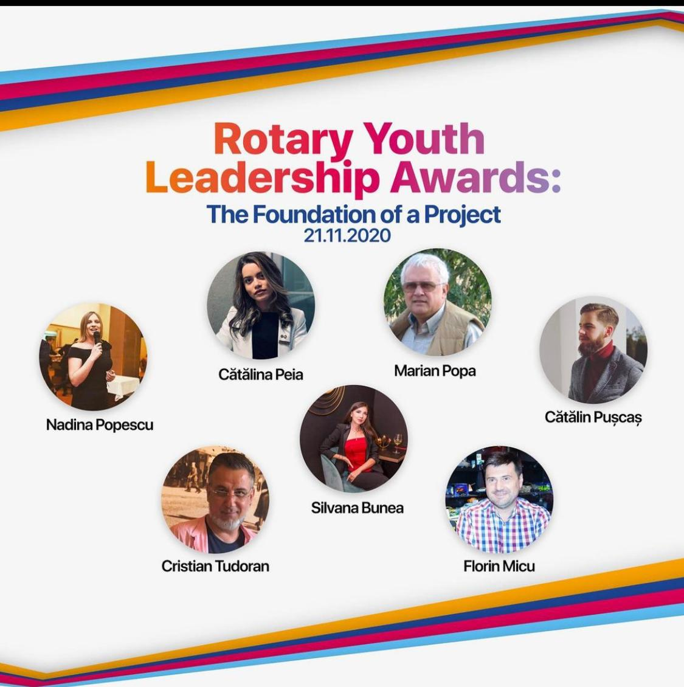

Weekendul acesta, pe data de 21 noiembrie 2020, Interact București alături de Interact Bucuresti Triumph au avut onoarea sa organizeze mult așteptatul ,,RYLA: The foundation of a project" in mediul digital. Desigur, nu am fi putut reuși fără ajutorul Catalinei Peia (Rotaract Bucuresti), Nadina Popescu (Rotaract Bucuresti), Marian Popa (Rotary Pipera), Cristian Tudoran (Rotary Bucuresti), Catalin Puscas (Rotaract Cluj-Napoca), Silvana Bunea (Rotaract Bucuresti Triumph) si Florin Micu (Rotary Bucuresti Triumph)!
Avand o prezenta stimabila, aproximativ 135 de membri din întreg districtul au fost incantati sa asiste în cadrul sesiunilor de informare rotariene, rotaractiene si interactiene, acumuland cunoștințe în domeniile fundraisingului, marketingului, leadershipului și managementului de conflict.
După 7 ore de conversații plăcute, munca în echipa și colaborare, putem afirma cu fericire ca acest RYLA a fost un succes. Va așteptam la următoarea ediție!